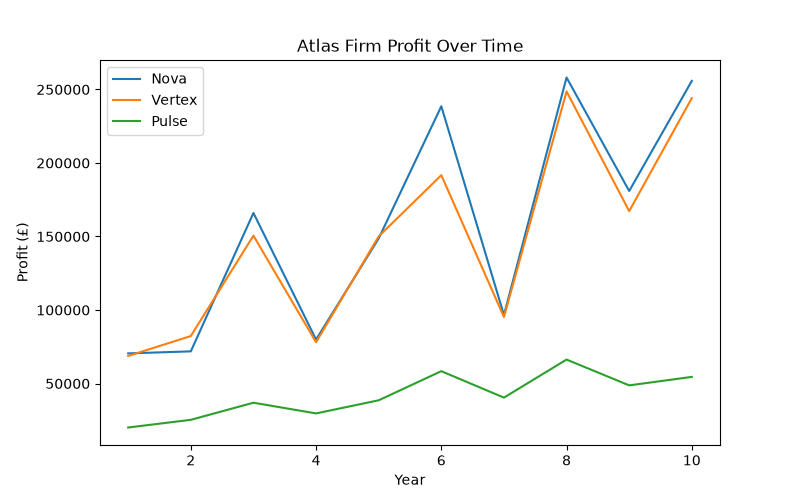
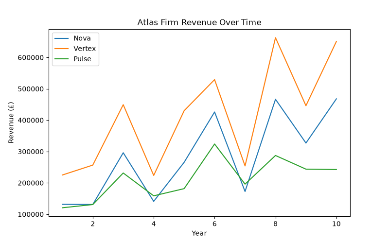
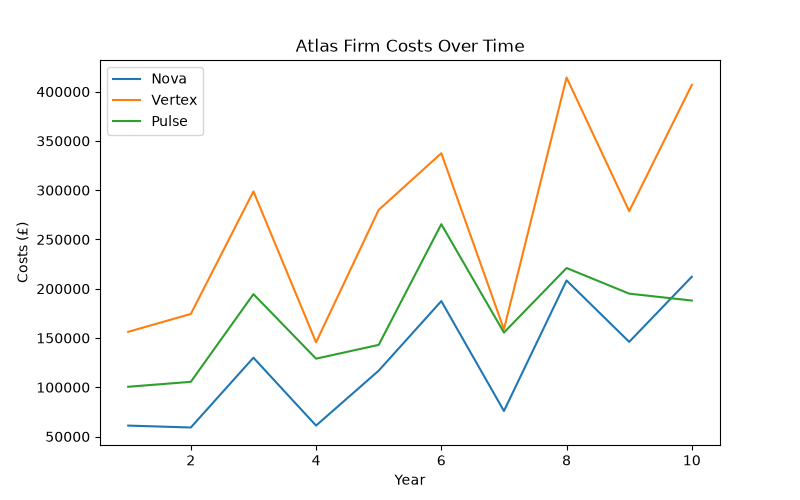
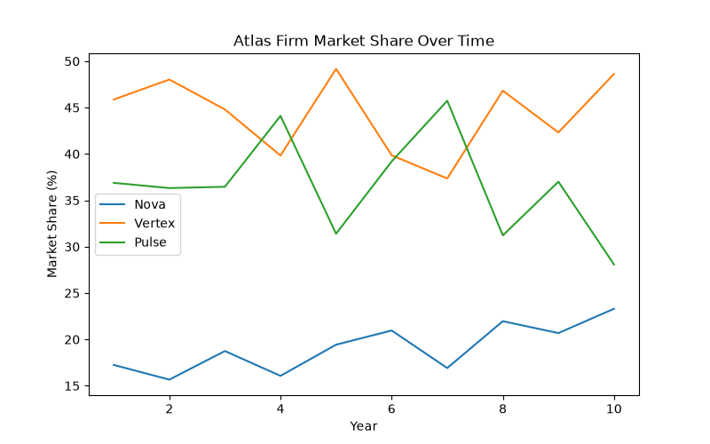

Atlas generates analytical data to evaluate how firms perform over time. The simulation tracks financial performance, market competition and consumer behaviour across multiple simulated years.
Tracks how each firm's profitability changes throughout the simulation. This allows comparison of different business strategies and responses to market conditions.

Shows total revenue generated by each firm and highlights differences between market size, pricing strategy and sales volume.

Shows how production costs and strategic decisions influence firm profitability.

Displays how consumer preferences and firm decisions affect competition within the market.
